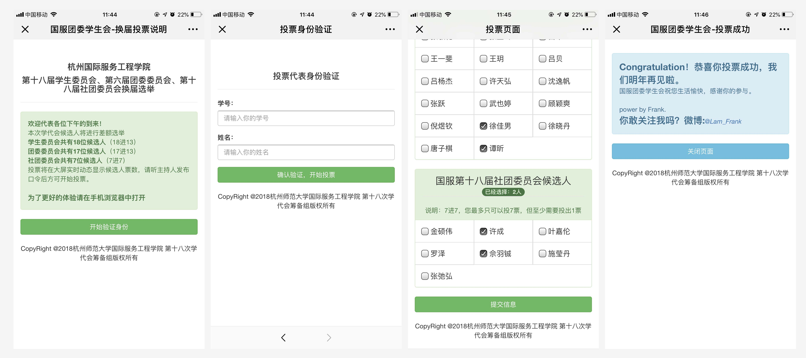
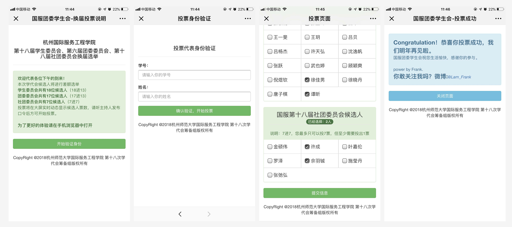

5. 学代会换届选举投票系统
5.1 项目时间
2015-2017
5.2 项目简介
同时在学生工作之余，也为学代会换届投票选举开发了在线实时投票系统，高效解决选票计票的繁琐问题。并实践了三年的版本迭代
地址：http://hise.frankfeekr.top/hise/admin


2015-2017
同时在学生工作之余，也为学代会换届投票选举开发了在线实时投票系统，高效解决选票计票的繁琐问题。并实践了三年的版本迭代
地址：http://hise.frankfeekr.top/hise/admin
